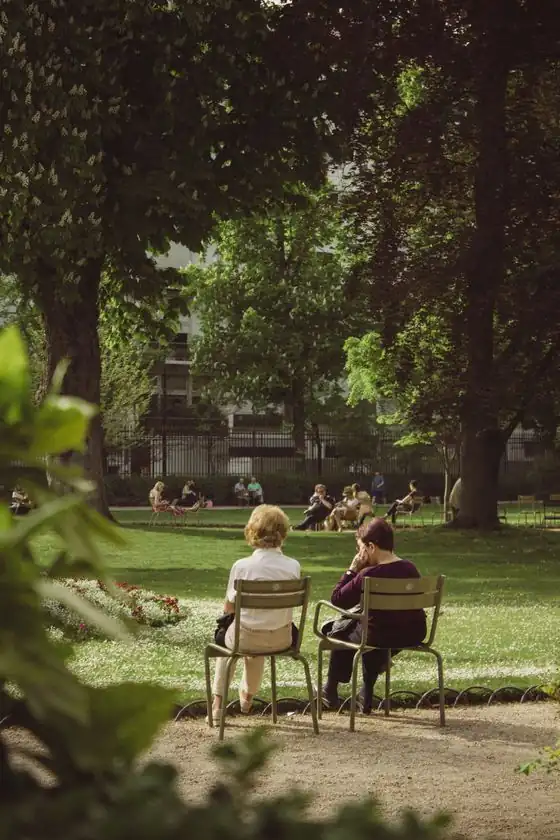

Help shape the future of Meridian
From how we move to where we meet — take part in the projects shaping our city.
Open to participation
CurrentToday every card carries a single clock and a single “Learn more.” It reads perfectly when a project runs one method at a time — and quietly lies the moment a project opens a survey, an idea collection and a vote together.



Open to participation
Redesign · fits the railA drop-in replacement at the same size. A parallel project now shows its methods as a small icon trio with “3 ways open”; a single-method project keeps the familiar clock. Both sit in one rail without a redesign of the rail.

Featured — open to participation
Bold moduleFor a flagship project, the rail card isn’t enough. This module makes the parallelism the whole point: one project, several doors, all open now — and you can walk through any of them, in any order.
Flagship project · City of Meridian
Reimagine Meridian 2030
Mobility survey Survey
Ten minutes on how you move around the city today.
closes in 2 days
Share your ideas Ideation
Add a proposal for a street, square or route — and back others.
ends 9 Jul
Back the best ideas Vote
Spend your points on the proposals you most want to see.
ends 23 Jul
New here? Start with the survey — the other ways stay open while you do.
Open the project page
A greener Station Road
We’re redesigning Station Road for trees, wider pavements and safer cycling. Take the survey to tell us what matters most on your daily journey.

Completed projects


Upcoming events
View all events

What is your proposal?
Post your proposal, gather support and place it on the city’s agenda.
Explore all proposals